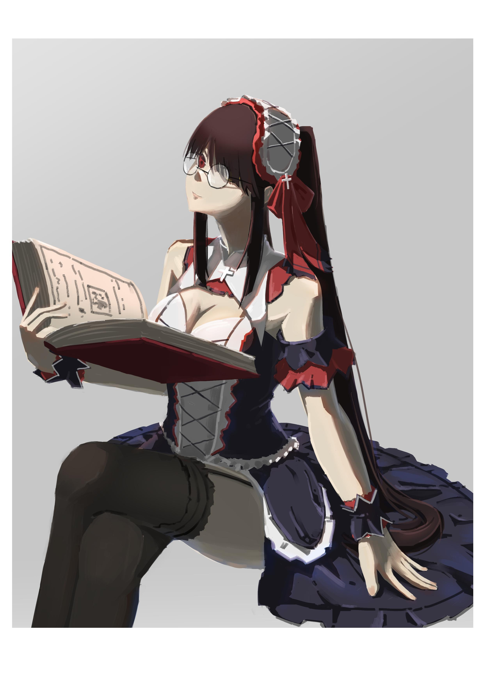

<div id="article_content" class="text-paragraph article_container">看到約戰新的一集有狂三的新靈裝，<div>真香(´▽`ʃ♡ƪ)</div><div><br></div><div>看到美歌大先畫了就心癢癢(好美阿&lt;3)，</div><div>身為一名三三控必須畫一下</div><div></div><div><br></div><div>這張嚴格上來講跟上一張一樣用了新的上色方式，</div><div>有些部分大概知道問題在哪，</div><div>像是陰影部分的飽和度不太夠，</div><div>但不知道怎麼處理會比較好，</div><div>還有明暗需要用冷暖來處理，</div><div>目前都沒有處理得很好，整張圖看起來有點灰灰的，</div><div>但整體來說還算是新的嘗試，應該也有吸收到經驗值</div><div><br></div><div><a href="https://www.pixiv.net/member_illust.php?mode=medium&illust_id=73808005" target="_blank">P站</a>有沒戴眼鏡der</div><div><br></div><div>下一張應該還是狂三(*´∀`)~♥~♥~♥</div><div><br></div><script>
$('article.c-text img').load(function () {
// 表格內圖片大於表格寬時，設為 100%
if ($(this).parents('table').length != 0) {
if ($(this).width() >= $(this).parents('td').width()) {
$(this).width('100%');
} else {
$(this).width($(this).width() + 'px');
}
}
});
</script></div>